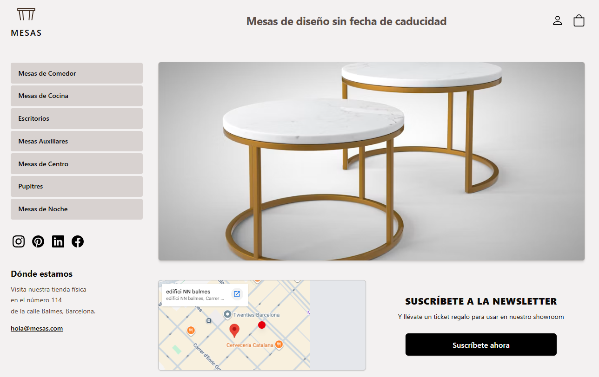

Acceso a Bases de Datos (1)
En el desarrollo de un MVP de una tienda virtual con Astro y Supabase, la velocidad de carga y el control total sobre los datos son críticos. Aunque Supabase ofrece un SDK cliente muy cómodo, configurar la conexión directa con SQL puro permite exprimir al máximo el rendimiento de PostgreSQL además de ofrecer mayor flexibilidad a la hora de migrar.
El proceso de acceso a la base de datos implica la instalación de los paquetes necesarios, la configuración de las credenciales y la conexión al servidor PostgreSQL.
Variables de Entorno de Conexión
Supabase proporciona una cadena de conexión directa (Connection String) en la configuración de la base de datos. Para mantener la seguridad del MVP, estas credenciales se almacenan en el archivo .env de Astro y nunca se exponen al cliente.
-
Obtenemos la URI de conexión (Desde el panel de Supabase): Para hacer el deployment en Vercel entramos a la configuración del proyecto en Supabase, sección Database, y copiamos la URI de conexión en el modo Session (puerto 6543).
-
Configuramos la variable de conexión
DATABASE_URLen Astro (archivo.env): Para ello creamos el archivo.enven la raíz del proyecto de Astro y definimos la variable de la siguiente manera:Este archivo deberá incluirse en el
.gitignorepara no exponer por error las credenciales de conexión.
Configurar el controlador nativo pg (node-postgres)
Para conectar Astro directamente a la base de datos PostgreSQL de Supabase sin pasar por la API REST del SDK, utilizamos el controlador nativo pg (node-postgres). Esto nos permite abrir un pool de conexiones, reutilizando los enlaces existentes a la base de datos para procesar múltiples solicitudes de usuarios de forma ultra rápida, algo vital para el catálogo de una tienda virtual:
-
Instalamos la biblioteca
node-postgres (pg)y sus dependencias en el proyecto, añadiéndola automáticamente como una dependencia de producción en el archivopackage.json. Para ello ejecutamos el siguiente comando en la terminal:pnpm add pg -
Instalamos el equivalente de los tipos de datos de
pgenTypescript. Ejecutamos en la terminal:pnpm add -D @types/pg
Configurar el adaptador de Vercel
Para desplegar y trabajar correctamente con Astro, Vercel (el servidor de aplicaciones) y la base de datos en Supabase (servidor de Bases de Datos) usando renderizado en servidor (SSR), hay un par de configuraciones e instalaciones adicionales fundamentales.
-
Instalamos el driver de
Vercel. Para ello ejecutamos el siguiente comando en la terminal:pnpm dlx astro add vercel -
Configuramos el Renderizado en Servidor en
astro.config.mjs. Deberemos verificar que el archivoastro.config.mjscontenga la propiedadoutput: 'server'. De lo contrario debemos incluirla manualmente.
Configuración adicional para los estilos
-
Instalamos
tailwindpara los estilos delFrontEnd, ejecutando el siguiente comando en la terminal:pnpm astro add tailwind
Los archivos astro.config.mjs y package.json
deberán lucir similares a los siguientes:
astro.config.mjs
package.json
ARCHIVOS DE CONEXIÓN CON LA BASE DE DATOS
Antes de comenzar a trabajar con la base de datos, es importante crear los archivos necesarios para gestionar la conexión:
-
Creamos el archivo de tipos para las variables de entorno
env.d.ts. Este archivo permite indicar el tipo de variable que se declaran en Astro. Las interfaces que contiene se aplican a todo el proyecto. El archivoenv.d.ts, se debe ubicar en la raíz del proyecto.env.d.ts
-
Creamos una carpeta llamada
libdentro de la carpetasrc, para almacenar todos los archivos de conexión y lectura a las tablas de la Base de Datos (archivos.ts). -
Creamos el archivo de conexión a la base de datos
src/lib/db.ts. Este archivo permitirá iniciar la conexión con la Base de Datos utilizando la variable de entorno que se encuentra oculta en el archivo.env. (El archivo.envno se exporta. Posteriormente, al hacer el deployment, se deberá configurar en el proyecto deVercel).src/lib/db.ts
CONSULTAS SQL A LAS TABLAS DE LA BASE DE DATOS
Para realizar consultas SQL a las tablas de la base de datos, crearemos un archivo .ts, por cada tabla que queramos gestionar. Organizaremos las funciones para manipular cada tabla dentro de estos archivos los cuales se guardan en la carpeta src/lib/. Ejemplo:
src/
└── lib/
├── db.ts # Conexión principal
├── categorias.ts # getCategorias()
├── productos.ts # getProductosByCategoria(), getProductoById()
├── clientes.ts # getDatosCliente()
└── facturas.ts # crearFactura(), getFactura()
Ejemplo del archivo src/lib/categorias.ts
src/lib/categorias.ts
RENDERIZADO DE DATOS
El renderizado de datos se hará en un componente o en una página de Astro, según sea necesario. En el caso de las categorías, que se utilizan para mostrar un menú, crearemos un componente específico ( src/components/MenuCategorias.astro ) para su visualización.
src/components/MenuCategorias.astro
En el caso del ejemplo del Proyecto Final, éste componente se encuentra embebido en el archivo src/layouts/LayoutBase.astro

src/layouts/LayoutBase.astro
Y en el <slot /> de este layout se muestra el contenido principal de cada página. Ejemplo:
src/pages/index.astro
Volviendo a la visualización de los datos, en el caso de los productos, en este caso se mostraría un grid de productos, directamente en la página src/pages/productos.astro con los productos que se corresponden con la categoría seleccionada. (Quizá podría ser útil crear un componente específico para mostrar la tarjeta de cada producto.)
En la siguiente sección veremos cómo leer un parámetro get de la url de la página. (Ejemplo:http://localhost:4321/productos?categoria=1)